Throughout this paper, a random variable will be a measurable function from a probability space to some Banach space (often the real line). The norm in the implicit Banach space will always be denoted by 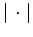.
Suppose that 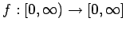 is a non-increasing function. Define the left continuous inverse to be
In describing the tail distribution of a random variable  , instead
of considering
the function
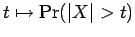, we will
consider its right continuous inverse, which we will denote by 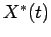.
In fact, this
quantity appears very much in the literature, and is more commonly
referred to as the decreasing rearrangement
(or more correctly the non-increasing rearrangement)
of
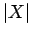. Notice that if one considers 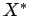 to be a random variable on the
probability space
, instead
of considering
the function
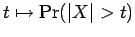, we will
consider its right continuous inverse, which we will denote by 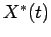.
In fact, this
quantity appears very much in the literature, and is more commonly
referred to as the decreasing rearrangement
(or more correctly the non-increasing rearrangement)
of
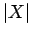. Notice that if one considers 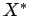 to be a random variable on the
probability space  (with Lebesgue measure),
then has exactly the same law as
.
We might also consider the left continuous inverse
(with Lebesgue measure),
then has exactly the same law as
.
We might also consider the left continuous inverse
 . Notice that
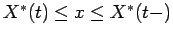 if and only if
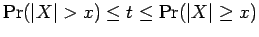.
. Notice that
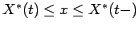 if and only if
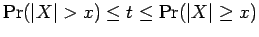.
If  and
and  are two quantities (that may depend upon certain
parameters), we will write
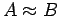 to mean that there exist
positive constants
are two quantities (that may depend upon certain
parameters), we will write
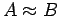 to mean that there exist
positive constants  and
and  such that
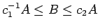. We will call
such that
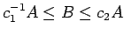. We will call  and
and  the constants of approximation. If
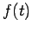 and 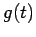 are two (usually non-increasing) functions on
the constants of approximation. If
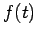 and 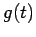 are two (usually non-increasing) functions on
 , we will write
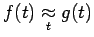 if there exist
positive constants
, we will write
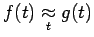 if there exist
positive constants  ,
,  ,
,  and 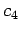 such that
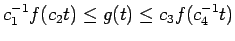 for all 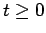. Again, we
will call
and 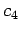 such that
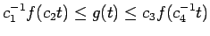 for all 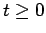. Again, we
will call  ,
,  ,
,  and the constants of
approximation.
and the constants of
approximation.
Suppose that  and 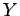 are random variables. Then the statement
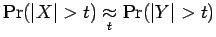 is the same as the
statement
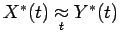. Since
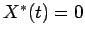 for 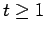
the latter statement is equivalent to
the existence of positive constants
and 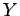 are random variables. Then the statement
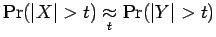 is the same as the
statement
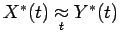. Since
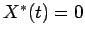 for 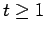
the latter statement is equivalent to
the existence of positive constants  ,
,  ,
,  , and
, and
 such that
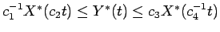
for
such that
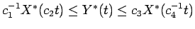
for
 .
.
To avoid bothersome convergence problems, we will always suppose that
our sequence of independent random variables  is of finite
length. Given a sequence of independent random variables
is of finite
length. Given a sequence of independent random variables  , when
no
confusion will arise, we will use the following notations. If
, when
no
confusion will arise, we will use the following notations. If  is a
finite
subset of
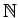, we will let
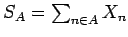, and
is a
finite
subset of
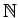, we will let
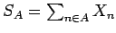, and
 . If
. If  is a positive integer, then
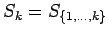 and
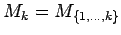. We will
define the maximal function
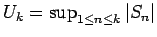. Furthermore, 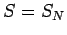,
is a positive integer, then
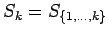 and
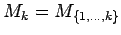. We will
define the maximal function
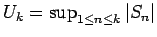. Furthermore, 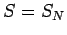,  , and 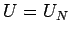, where
, and 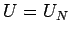, where  is the length of the sequence
is the length of the sequence  .
.
If  is a real number, we will write
is a real number, we will write
 and
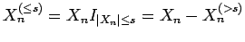.
For
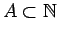, we will write
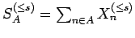.
Similarly we define
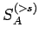,
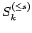, etc.
and
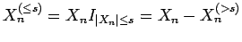.
For
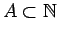, we will write
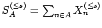.
Similarly we define
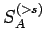,
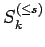, etc.
Another quantity that we shall care about is the decreasing
rearrangement of the disjoint sum of random variables.
This notion was used by Johnson, Maurey,
Schechtman and Tzafriri (1979), Carothers and Dilworth (1988),
and Johnson and Schechtman (1989), all in the context of sums of
independent random variables.
The disjoint
sum of the sequence  is the measurable function on the measure
space
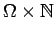 that takes
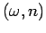 to
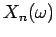. We shall denote the decreasing rearrangement of
the disjoint sum by
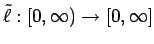, that is,
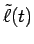 is the least number such that
is the measurable function on the measure
space
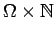 that takes
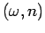 to
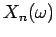. We shall denote the decreasing rearrangement of
the disjoint sum by
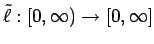, that is,
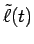 is the least number such that
Proof: The first inequality follows easily
once one notices that both sides of this inequality are zero if 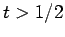.
To get the second inequality, note that, by an easy argument, if 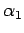, 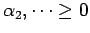 with 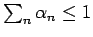, then